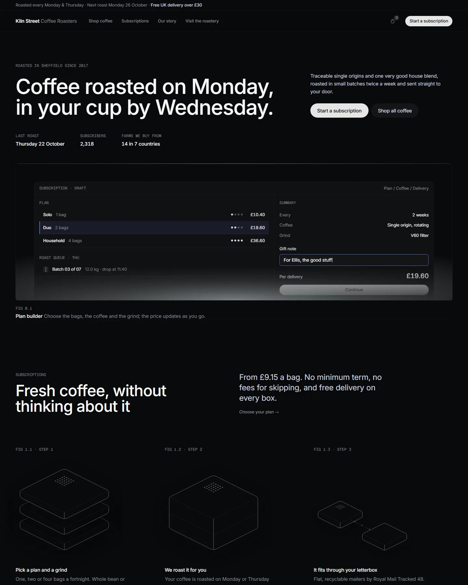
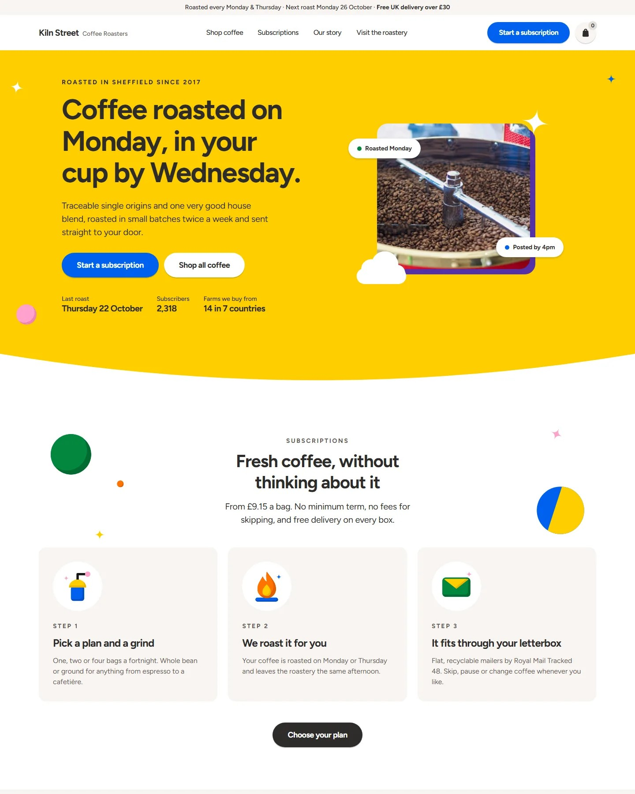

One site.
Any design system.
YOUR SITE
Your site
MarginNotes
Inkleaf
GraphiteBlueprint
MorningShapes
Same site, same prompt. Each system applied by a coding agent, unedited.

Graphite Blueprint
Morning Shapes+ morenew systems keep arriving
Pick one. Your agent applies it.
pigmentui.com